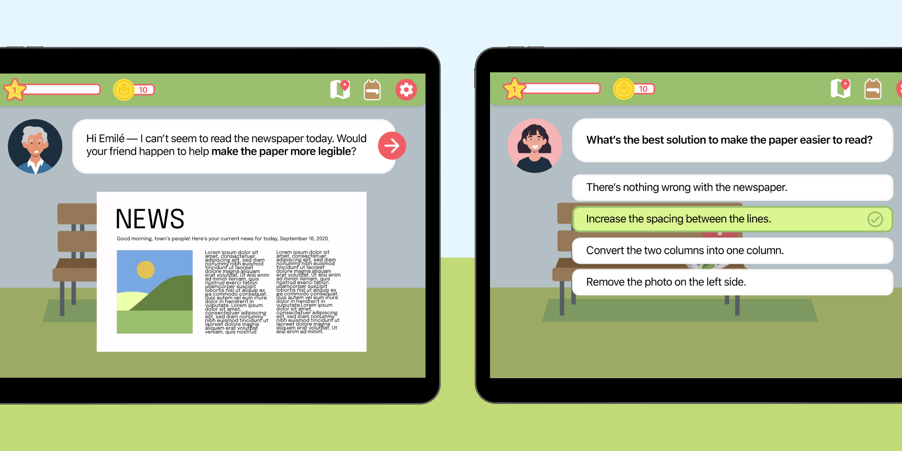
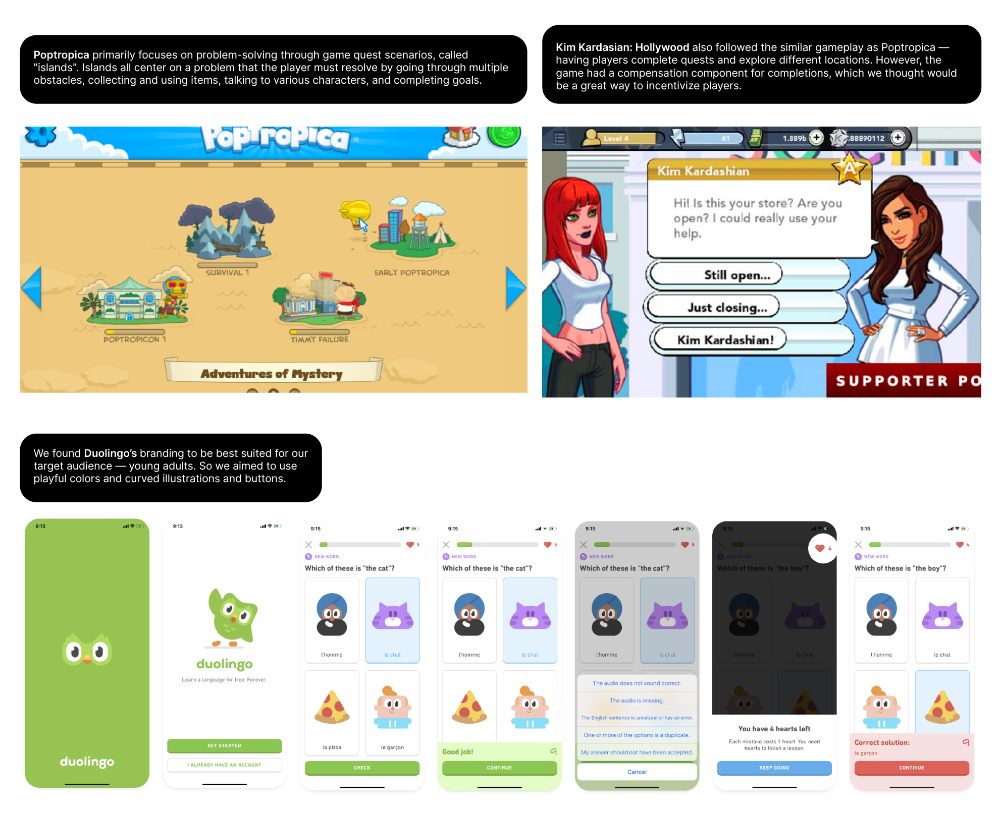

Designathon — 2020
Locate

My sister Jay and I participated in the Adobe x Amazon Creative Jam Designathon where we won first place with our game Locate, an app to help students locate problems and offer design solutions.
Role
Product Designer
Team
Jennifer Nguyen ('Jay'), Project Consultant and Presenter
Tools
Adobe IllustratorAdobe XD
Timeline
12 hours, Aug
Objective
Design a tablet app (Android, Fire, iPad, etc.) to provide a safe way for high school students (ages 13+) to #DiscoverDesign.
01 — Discover what design is and how they interact with it every day
02 — Help them see the impact of good or bad design
03 — Encourage them to explore jobs/careers in design
04 — Inspire them to start their own career in design
02 — Help them see the impact of good or bad design
03 — Encourage them to explore jobs/careers in design
04 — Inspire them to start their own career in design
Research
How can we introduce design to people who consider themselves 'non-designers'?
When it comes to current design curriculums and online resources, there is a lot of info about what design is and how it's utilized. There's been Medium articles, panels, workshops, and huge design communities offering insight on finding your ‘inner designer’ and how to navigate within the career space. However, when looking at the listening audience, there's one large group missing — people who have or have not considered design due to a past misconception.
How can we help young minds develop a growth mindset when it comes to design thinking and offer them insight in ways that design can be impactful for one’s community?
When interviewing current students, many have stated that growing up, there’s been a huge discouragement to pursue a career within the design space — with a preconceived notion that “it’s hard to make a living”. Young minds are then geared into fields such as science, math, and business which are deemed more intellectual and successful.
There was also a group of individuals who’ve perceived themselves as ‘non-designers’ due to their “lack of visual creativity”.
However, design encompasses more than visuals but rather design critical thinking and strategizing. There are also many fields, e.g., computer science and psychology, that are branches within design.
There was also a group of individuals who’ve perceived themselves as ‘non-designers’ due to their “lack of visual creativity”.
However, design encompasses more than visuals but rather design critical thinking and strategizing. There are also many fields, e.g., computer science and psychology, that are branches within design.
Branding
Finding inspiration from current game plays.
We looked at current games and learning applications geared towards young adults — ages 11 to 15. Looking at these types of user experiences, we leaned more towards an interactive map for players to solve problems in their local communities. Not only did this provide a non-aggressive and more engaging way in educating, but also enabled a sense of value and need that design has.

In crafting a concrete and user flow, we mainly looked towards Poptropica and Kim Kardashian: Hollywood. Both interfaces focused on quest scenarios to further engage the player into the game world.
Final Prototype
Meet Emilé.
Emilé is first introduced to help provide a more welcoming space in the onboarding process.
Locate problems.
Once the player travels to a particular location, they can then scavenge for problems to solve, noted by the red error icon.
Offer a chance to recollect and provide a better solution.
When incorrectly answered, we still wanted to provide a positive experience of understanding design problems. Players have a chance to reflect on the problem at hand and provide a better answer.
Rewarding players.
As a way to incentivize players and also to grant them more opportunities for engagement, players can get articles and coins! Which can be later looked at via their “backpack”.
Explore other communities.
Once a location’s problems are all solved, players can explore other pinned locations, using their rewards!
Learnings and Takeaways
This experience was rewarding, especially since the last time I participated in Adobe Jam, my team placed last. In refiguring how I go forward with a product, I learned to go towards simple rather than complex, especially when inviting casual or beginning players.
These culminating efforts within a 12 hour time time constraint has given me a new perspective on how design is perceived, especially from those who initially consider themselves “non-designers”.
These culminating efforts within a 12 hour time time constraint has given me a new perspective on how design is perceived, especially from those who initially consider themselves “non-designers”.
Next steps
Base different locations based on various spaces within design.
In the MVP, we only provided simple principles such as color and space; however, we would love to enable young minds to explore other spaces within design offered.Expand more mental models to further deepen understanding.
We’ve provided mental models to explore more of with the backpack articles, but would love to embed more complexity and deepened information in particular design topics.